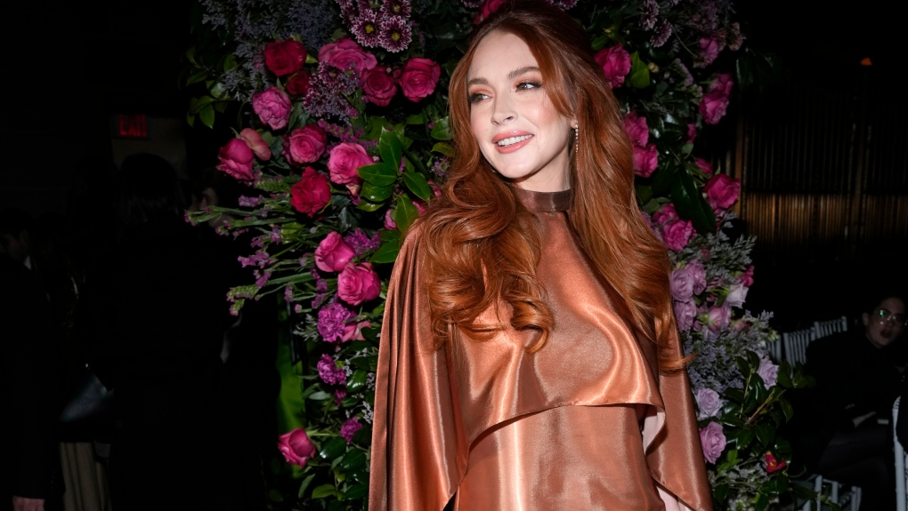

From 'Freaky Friday' to Motherhood: Lindsay Lohan's Journey
Image Credits https://www.ctvnews.ca/entertainment/lindsay-lohan-is-receiving-some-parenting-advice-from-jamie-lee-curtis-1.6434312
Once upon a time, Lindsay Lohan was a household name. She starred in hits like 'Mean Girls,' 'The Parent Trap,' and 'Freaky Friday.' Everyone knew her name. She was a child star who had everything going for her. But as she grew up, things started to unravel.
Lohan became tabloid fodder with her multiple rehab stints, arrests, and legal troubles. She was no longer a sought-after actress but a cautionary tale. But now, Lohan is back in the spotlight, this time with a different focus--motherhood. She recently announced that she's pregnant and is excited to start this new chapter in her life.
From the Bright Lights to the Low Points
Lohan's rise to fame was meteoric. She was only 11-years-old when she starred in 'The Parent Trap' and won over audiences with her talent and charm. From there, the roles kept coming, and Lohan became a household name. But as she got older, things started to change.
By age 20, Lohan was already making headlines for her hard-partying ways. She was a regular fixture in the tabloids, and her career started to suffer. She had trouble showing up on set, and her behavior became increasingly erratic. In 2007, she was arrested for DUI, and her public image took a hit.
Lohan's troubles didn't end there. She had several more arrests and spent time in rehab. Her acting career stalled, and she struggled to find work. But through it all, Lohan has never lost her sense of optimism. She's always believed that she can turn things around.
A New Chapter in Life
And now, Lohan has a new reason to be optimistic--she's going to be a mother. In her interview with Allure magazine, Lohan talked about how excited she is to be starting this new chapter in her life. She's been through a lot, but she's ready for the challenge of motherhood.
Lohan's journey hasn't been easy, but it's a reminder that life is full of ups and downs. She's had her share of low points, but she's picking herself up and moving forward. And that's something we can all learn from.
Since this is a data-driven world, here are some statistics to back up Lohan's journey:
- The Parent Trap (1998) grossed $92 million at the box office
- Mean Girls (2004) grossed $129 million at the box office
- Lohan's net worth is estimated to be $800,000
- Lohan has 7.8 million followers on Instagram
Conclusion
So what can we learn from Lohan's journey? Here are three key takeaways:
- Life is full of ups and downs, but it's important to stay optimistic.
- Everyone makes mistakes, but it's never too late to turn things around.
- Having a new focus, such as motherhood, can be a great way to start a new chapter in life.
Lohan's story is a reminder that no matter how difficult things may seem, there's always a way forward. With a little determination and a lot of optimism, anything is possible.
References:
Allure magazine interview: https://www.allure.com/story/lindsay-lohan-interview-may-2021-cover-story
Hashtags:
#LindsayLohan #FreakyFriday #MeanGirls #Motherhood #Celebrities
Category:
Entertainment/ Celebrity News
Curated by Team Akash.Mittal.Blog
Share on Twitter Share on LinkedIn